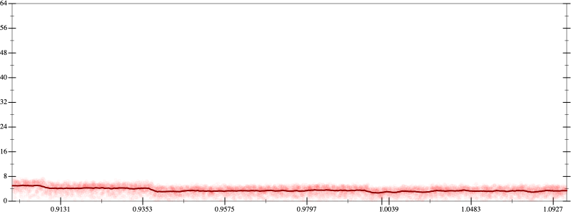
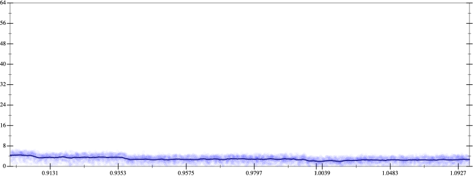
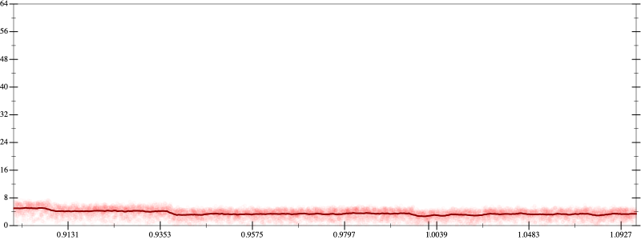
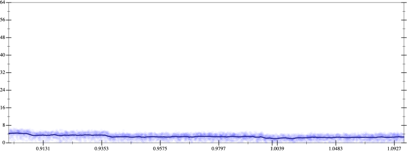

Initial program 3.6
\[\left(\left(\left(\left(\left(\left(-17297280.0 + 242161920.0 \cdot \left(x \cdot x\right)\right) + -484323840.0 \cdot \left(\left(\left(x \cdot x\right) \cdot x\right) \cdot x\right)\right) + 322882560.0 \cdot \left(\left(\left(\left(\left(x \cdot x\right) \cdot x\right) \cdot x\right) \cdot x\right) \cdot x\right)\right) + -92252160.0 \cdot \left(\left(\left(\left(\left(\left(\left(x \cdot x\right) \cdot x\right) \cdot x\right) \cdot x\right) \cdot x\right) \cdot x\right) \cdot x\right)\right) + 12300288.0 \cdot \left(\left(\left(\left(\left(\left(\left(\left(\left(x \cdot x\right) \cdot x\right) \cdot x\right) \cdot x\right) \cdot x\right) \cdot x\right) \cdot x\right) \cdot x\right) \cdot x\right)\right) + -745472.0 \cdot \left(\left(\left(\left(\left(\left(\left(\left(\left(\left(\left(x \cdot x\right) \cdot x\right) \cdot x\right) \cdot x\right) \cdot x\right) \cdot x\right) \cdot x\right) \cdot x\right) \cdot x\right) \cdot x\right) \cdot x\right)\right) + 16384.0 \cdot \left(\left(\left(\left(\left(\left(\left(\left(\left(\left(\left(\left(\left(x \cdot x\right) \cdot x\right) \cdot x\right) \cdot x\right) \cdot x\right) \cdot x\right) \cdot x\right) \cdot x\right) \cdot x\right) \cdot x\right) \cdot x\right) \cdot x\right) \cdot x\right)\]
- Using strategy
rm Applied add-cube-cbrt3.5
\[\leadsto \left(\left(\color{blue}{\left(\sqrt[3]{\left(\left(\left(-17297280.0 + 242161920.0 \cdot \left(x \cdot x\right)\right) + -484323840.0 \cdot \left(\left(\left(x \cdot x\right) \cdot x\right) \cdot x\right)\right) + 322882560.0 \cdot \left(\left(\left(\left(\left(x \cdot x\right) \cdot x\right) \cdot x\right) \cdot x\right) \cdot x\right)\right) + -92252160.0 \cdot \left(\left(\left(\left(\left(\left(\left(x \cdot x\right) \cdot x\right) \cdot x\right) \cdot x\right) \cdot x\right) \cdot x\right) \cdot x\right)} \cdot \sqrt[3]{\left(\left(\left(-17297280.0 + 242161920.0 \cdot \left(x \cdot x\right)\right) + -484323840.0 \cdot \left(\left(\left(x \cdot x\right) \cdot x\right) \cdot x\right)\right) + 322882560.0 \cdot \left(\left(\left(\left(\left(x \cdot x\right) \cdot x\right) \cdot x\right) \cdot x\right) \cdot x\right)\right) + -92252160.0 \cdot \left(\left(\left(\left(\left(\left(\left(x \cdot x\right) \cdot x\right) \cdot x\right) \cdot x\right) \cdot x\right) \cdot x\right) \cdot x\right)}\right) \cdot \sqrt[3]{\left(\left(\left(-17297280.0 + 242161920.0 \cdot \left(x \cdot x\right)\right) + -484323840.0 \cdot \left(\left(\left(x \cdot x\right) \cdot x\right) \cdot x\right)\right) + 322882560.0 \cdot \left(\left(\left(\left(\left(x \cdot x\right) \cdot x\right) \cdot x\right) \cdot x\right) \cdot x\right)\right) + -92252160.0 \cdot \left(\left(\left(\left(\left(\left(\left(x \cdot x\right) \cdot x\right) \cdot x\right) \cdot x\right) \cdot x\right) \cdot x\right) \cdot x\right)}} + 12300288.0 \cdot \left(\left(\left(\left(\left(\left(\left(\left(\left(x \cdot x\right) \cdot x\right) \cdot x\right) \cdot x\right) \cdot x\right) \cdot x\right) \cdot x\right) \cdot x\right) \cdot x\right)\right) + -745472.0 \cdot \left(\left(\left(\left(\left(\left(\left(\left(\left(\left(\left(x \cdot x\right) \cdot x\right) \cdot x\right) \cdot x\right) \cdot x\right) \cdot x\right) \cdot x\right) \cdot x\right) \cdot x\right) \cdot x\right) \cdot x\right)\right) + 16384.0 \cdot \left(\left(\left(\left(\left(\left(\left(\left(\left(\left(\left(\left(\left(x \cdot x\right) \cdot x\right) \cdot x\right) \cdot x\right) \cdot x\right) \cdot x\right) \cdot x\right) \cdot x\right) \cdot x\right) \cdot x\right) \cdot x\right) \cdot x\right) \cdot x\right)\]
Applied simplify2.9
\[\leadsto \left(\left(\color{blue}{\left(\sqrt[3]{\left(\left(x \cdot x\right) \cdot \left(x \cdot x\right)\right) \cdot \left(\left(x \cdot x\right) \cdot 322882560.0 + -484323840.0\right) + \left(\left(\left(x \cdot x\right) \cdot 242161920.0 + -17297280.0\right) + \left(\left(x \cdot x\right) \cdot -92252160.0\right) \cdot {\left(x \cdot x\right)}^{3}\right)} \cdot \sqrt[3]{\left(\left(x \cdot x\right) \cdot \left(x \cdot x\right)\right) \cdot \left(\left(x \cdot x\right) \cdot 322882560.0 + -484323840.0\right) + \left(\left(\left(x \cdot x\right) \cdot 242161920.0 + -17297280.0\right) + \left(\left(x \cdot x\right) \cdot -92252160.0\right) \cdot {\left(x \cdot x\right)}^{3}\right)}\right)} \cdot \sqrt[3]{\left(\left(\left(-17297280.0 + 242161920.0 \cdot \left(x \cdot x\right)\right) + -484323840.0 \cdot \left(\left(\left(x \cdot x\right) \cdot x\right) \cdot x\right)\right) + 322882560.0 \cdot \left(\left(\left(\left(\left(x \cdot x\right) \cdot x\right) \cdot x\right) \cdot x\right) \cdot x\right)\right) + -92252160.0 \cdot \left(\left(\left(\left(\left(\left(\left(x \cdot x\right) \cdot x\right) \cdot x\right) \cdot x\right) \cdot x\right) \cdot x\right) \cdot x\right)} + 12300288.0 \cdot \left(\left(\left(\left(\left(\left(\left(\left(\left(x \cdot x\right) \cdot x\right) \cdot x\right) \cdot x\right) \cdot x\right) \cdot x\right) \cdot x\right) \cdot x\right) \cdot x\right)\right) + -745472.0 \cdot \left(\left(\left(\left(\left(\left(\left(\left(\left(\left(\left(x \cdot x\right) \cdot x\right) \cdot x\right) \cdot x\right) \cdot x\right) \cdot x\right) \cdot x\right) \cdot x\right) \cdot x\right) \cdot x\right) \cdot x\right)\right) + 16384.0 \cdot \left(\left(\left(\left(\left(\left(\left(\left(\left(\left(\left(\left(\left(x \cdot x\right) \cdot x\right) \cdot x\right) \cdot x\right) \cdot x\right) \cdot x\right) \cdot x\right) \cdot x\right) \cdot x\right) \cdot x\right) \cdot x\right) \cdot x\right) \cdot x\right)\]
Applied simplify2.9
\[\leadsto \left(\left(\left(\sqrt[3]{\left(\left(x \cdot x\right) \cdot \left(x \cdot x\right)\right) \cdot \left(\left(x \cdot x\right) \cdot 322882560.0 + -484323840.0\right) + \left(\left(\left(x \cdot x\right) \cdot 242161920.0 + -17297280.0\right) + \left(\left(x \cdot x\right) \cdot -92252160.0\right) \cdot {\left(x \cdot x\right)}^{3}\right)} \cdot \sqrt[3]{\left(\left(x \cdot x\right) \cdot \left(x \cdot x\right)\right) \cdot \left(\left(x \cdot x\right) \cdot 322882560.0 + -484323840.0\right) + \left(\left(\left(x \cdot x\right) \cdot 242161920.0 + -17297280.0\right) + \left(\left(x \cdot x\right) \cdot -92252160.0\right) \cdot {\left(x \cdot x\right)}^{3}\right)}\right) \cdot \color{blue}{\sqrt[3]{\left(-17297280.0 + \left(\left(x \cdot -484323840.0\right) \cdot {x}^{3} + x \cdot \left(x \cdot 242161920.0\right)\right)\right) + \left({x}^{3} \cdot {x}^{3}\right) \cdot \left(\left(x \cdot x\right) \cdot -92252160.0 + 322882560.0\right)}} + 12300288.0 \cdot \left(\left(\left(\left(\left(\left(\left(\left(\left(x \cdot x\right) \cdot x\right) \cdot x\right) \cdot x\right) \cdot x\right) \cdot x\right) \cdot x\right) \cdot x\right) \cdot x\right)\right) + -745472.0 \cdot \left(\left(\left(\left(\left(\left(\left(\left(\left(\left(\left(x \cdot x\right) \cdot x\right) \cdot x\right) \cdot x\right) \cdot x\right) \cdot x\right) \cdot x\right) \cdot x\right) \cdot x\right) \cdot x\right) \cdot x\right)\right) + 16384.0 \cdot \left(\left(\left(\left(\left(\left(\left(\left(\left(\left(\left(\left(\left(x \cdot x\right) \cdot x\right) \cdot x\right) \cdot x\right) \cdot x\right) \cdot x\right) \cdot x\right) \cdot x\right) \cdot x\right) \cdot x\right) \cdot x\right) \cdot x\right) \cdot x\right)\]
- Using strategy
rm Applied pow22.9
\[\leadsto \left(\left(\left(\sqrt[3]{\left(\left(x \cdot x\right) \cdot \left(x \cdot x\right)\right) \cdot \left(\left(x \cdot x\right) \cdot 322882560.0 + -484323840.0\right) + \left(\left(\left(x \cdot x\right) \cdot 242161920.0 + -17297280.0\right) + \left(\left(x \cdot x\right) \cdot -92252160.0\right) \cdot {\left(x \cdot x\right)}^{3}\right)} \cdot \sqrt[3]{\left(\left(x \cdot x\right) \cdot \left(x \cdot x\right)\right) \cdot \left(\left(x \cdot x\right) \cdot 322882560.0 + -484323840.0\right) + \left(\left(\left(x \cdot x\right) \cdot 242161920.0 + -17297280.0\right) + \left(\left(x \cdot x\right) \cdot -92252160.0\right) \cdot {\color{blue}{\left({x}^{2}\right)}}^{3}\right)}\right) \cdot \sqrt[3]{\left(-17297280.0 + \left(\left(x \cdot -484323840.0\right) \cdot {x}^{3} + x \cdot \left(x \cdot 242161920.0\right)\right)\right) + \left({x}^{3} \cdot {x}^{3}\right) \cdot \left(\left(x \cdot x\right) \cdot -92252160.0 + 322882560.0\right)} + 12300288.0 \cdot \left(\left(\left(\left(\left(\left(\left(\left(\left(x \cdot x\right) \cdot x\right) \cdot x\right) \cdot x\right) \cdot x\right) \cdot x\right) \cdot x\right) \cdot x\right) \cdot x\right)\right) + -745472.0 \cdot \left(\left(\left(\left(\left(\left(\left(\left(\left(\left(\left(x \cdot x\right) \cdot x\right) \cdot x\right) \cdot x\right) \cdot x\right) \cdot x\right) \cdot x\right) \cdot x\right) \cdot x\right) \cdot x\right) \cdot x\right)\right) + 16384.0 \cdot \left(\left(\left(\left(\left(\left(\left(\left(\left(\left(\left(\left(\left(x \cdot x\right) \cdot x\right) \cdot x\right) \cdot x\right) \cdot x\right) \cdot x\right) \cdot x\right) \cdot x\right) \cdot x\right) \cdot x\right) \cdot x\right) \cdot x\right) \cdot x\right)\]
Applied pow-pow2.8
\[\leadsto \left(\left(\left(\sqrt[3]{\left(\left(x \cdot x\right) \cdot \left(x \cdot x\right)\right) \cdot \left(\left(x \cdot x\right) \cdot 322882560.0 + -484323840.0\right) + \left(\left(\left(x \cdot x\right) \cdot 242161920.0 + -17297280.0\right) + \left(\left(x \cdot x\right) \cdot -92252160.0\right) \cdot {\left(x \cdot x\right)}^{3}\right)} \cdot \sqrt[3]{\left(\left(x \cdot x\right) \cdot \left(x \cdot x\right)\right) \cdot \left(\left(x \cdot x\right) \cdot 322882560.0 + -484323840.0\right) + \left(\left(\left(x \cdot x\right) \cdot 242161920.0 + -17297280.0\right) + \left(\left(x \cdot x\right) \cdot -92252160.0\right) \cdot \color{blue}{{x}^{\left(2 \cdot 3\right)}}\right)}\right) \cdot \sqrt[3]{\left(-17297280.0 + \left(\left(x \cdot -484323840.0\right) \cdot {x}^{3} + x \cdot \left(x \cdot 242161920.0\right)\right)\right) + \left({x}^{3} \cdot {x}^{3}\right) \cdot \left(\left(x \cdot x\right) \cdot -92252160.0 + 322882560.0\right)} + 12300288.0 \cdot \left(\left(\left(\left(\left(\left(\left(\left(\left(x \cdot x\right) \cdot x\right) \cdot x\right) \cdot x\right) \cdot x\right) \cdot x\right) \cdot x\right) \cdot x\right) \cdot x\right)\right) + -745472.0 \cdot \left(\left(\left(\left(\left(\left(\left(\left(\left(\left(\left(x \cdot x\right) \cdot x\right) \cdot x\right) \cdot x\right) \cdot x\right) \cdot x\right) \cdot x\right) \cdot x\right) \cdot x\right) \cdot x\right) \cdot x\right)\right) + 16384.0 \cdot \left(\left(\left(\left(\left(\left(\left(\left(\left(\left(\left(\left(\left(x \cdot x\right) \cdot x\right) \cdot x\right) \cdot x\right) \cdot x\right) \cdot x\right) \cdot x\right) \cdot x\right) \cdot x\right) \cdot x\right) \cdot x\right) \cdot x\right) \cdot x\right)\]
- Using strategy
rm Applied flip3-+2.8
\[\leadsto \left(\left(\left(\sqrt[3]{\left(\left(x \cdot x\right) \cdot \left(x \cdot x\right)\right) \cdot \left(\left(x \cdot x\right) \cdot 322882560.0 + -484323840.0\right) + \left(\left(\left(x \cdot x\right) \cdot 242161920.0 + -17297280.0\right) + \left(\left(x \cdot x\right) \cdot -92252160.0\right) \cdot {\left(x \cdot x\right)}^{3}\right)} \cdot \sqrt[3]{\left(\left(x \cdot x\right) \cdot \left(x \cdot x\right)\right) \cdot \left(\left(x \cdot x\right) \cdot 322882560.0 + -484323840.0\right) + \left(\left(\left(x \cdot x\right) \cdot 242161920.0 + -17297280.0\right) + \left(\left(x \cdot x\right) \cdot -92252160.0\right) \cdot {x}^{\left(2 \cdot 3\right)}\right)}\right) \cdot \sqrt[3]{\left(-17297280.0 + \left(\left(x \cdot -484323840.0\right) \cdot {x}^{3} + x \cdot \left(x \cdot 242161920.0\right)\right)\right) + \left({x}^{3} \cdot {x}^{3}\right) \cdot \color{blue}{\frac{{\left(\left(x \cdot x\right) \cdot -92252160.0\right)}^{3} + {322882560.0}^{3}}{\left(\left(x \cdot x\right) \cdot -92252160.0\right) \cdot \left(\left(x \cdot x\right) \cdot -92252160.0\right) + \left(322882560.0 \cdot 322882560.0 - \left(\left(x \cdot x\right) \cdot -92252160.0\right) \cdot 322882560.0\right)}}} + 12300288.0 \cdot \left(\left(\left(\left(\left(\left(\left(\left(\left(x \cdot x\right) \cdot x\right) \cdot x\right) \cdot x\right) \cdot x\right) \cdot x\right) \cdot x\right) \cdot x\right) \cdot x\right)\right) + -745472.0 \cdot \left(\left(\left(\left(\left(\left(\left(\left(\left(\left(\left(x \cdot x\right) \cdot x\right) \cdot x\right) \cdot x\right) \cdot x\right) \cdot x\right) \cdot x\right) \cdot x\right) \cdot x\right) \cdot x\right) \cdot x\right)\right) + 16384.0 \cdot \left(\left(\left(\left(\left(\left(\left(\left(\left(\left(\left(\left(\left(x \cdot x\right) \cdot x\right) \cdot x\right) \cdot x\right) \cdot x\right) \cdot x\right) \cdot x\right) \cdot x\right) \cdot x\right) \cdot x\right) \cdot x\right) \cdot x\right) \cdot x\right)\]
Applied associate-*r/2.8
\[\leadsto \left(\left(\left(\sqrt[3]{\left(\left(x \cdot x\right) \cdot \left(x \cdot x\right)\right) \cdot \left(\left(x \cdot x\right) \cdot 322882560.0 + -484323840.0\right) + \left(\left(\left(x \cdot x\right) \cdot 242161920.0 + -17297280.0\right) + \left(\left(x \cdot x\right) \cdot -92252160.0\right) \cdot {\left(x \cdot x\right)}^{3}\right)} \cdot \sqrt[3]{\left(\left(x \cdot x\right) \cdot \left(x \cdot x\right)\right) \cdot \left(\left(x \cdot x\right) \cdot 322882560.0 + -484323840.0\right) + \left(\left(\left(x \cdot x\right) \cdot 242161920.0 + -17297280.0\right) + \left(\left(x \cdot x\right) \cdot -92252160.0\right) \cdot {x}^{\left(2 \cdot 3\right)}\right)}\right) \cdot \sqrt[3]{\left(-17297280.0 + \left(\left(x \cdot -484323840.0\right) \cdot {x}^{3} + x \cdot \left(x \cdot 242161920.0\right)\right)\right) + \color{blue}{\frac{\left({x}^{3} \cdot {x}^{3}\right) \cdot \left({\left(\left(x \cdot x\right) \cdot -92252160.0\right)}^{3} + {322882560.0}^{3}\right)}{\left(\left(x \cdot x\right) \cdot -92252160.0\right) \cdot \left(\left(x \cdot x\right) \cdot -92252160.0\right) + \left(322882560.0 \cdot 322882560.0 - \left(\left(x \cdot x\right) \cdot -92252160.0\right) \cdot 322882560.0\right)}}} + 12300288.0 \cdot \left(\left(\left(\left(\left(\left(\left(\left(\left(x \cdot x\right) \cdot x\right) \cdot x\right) \cdot x\right) \cdot x\right) \cdot x\right) \cdot x\right) \cdot x\right) \cdot x\right)\right) + -745472.0 \cdot \left(\left(\left(\left(\left(\left(\left(\left(\left(\left(\left(x \cdot x\right) \cdot x\right) \cdot x\right) \cdot x\right) \cdot x\right) \cdot x\right) \cdot x\right) \cdot x\right) \cdot x\right) \cdot x\right) \cdot x\right)\right) + 16384.0 \cdot \left(\left(\left(\left(\left(\left(\left(\left(\left(\left(\left(\left(\left(x \cdot x\right) \cdot x\right) \cdot x\right) \cdot x\right) \cdot x\right) \cdot x\right) \cdot x\right) \cdot x\right) \cdot x\right) \cdot x\right) \cdot x\right) \cdot x\right) \cdot x\right)\]
Applied flip-+2.9
\[\leadsto \left(\left(\left(\sqrt[3]{\left(\left(x \cdot x\right) \cdot \left(x \cdot x\right)\right) \cdot \left(\left(x \cdot x\right) \cdot 322882560.0 + -484323840.0\right) + \left(\left(\left(x \cdot x\right) \cdot 242161920.0 + -17297280.0\right) + \left(\left(x \cdot x\right) \cdot -92252160.0\right) \cdot {\left(x \cdot x\right)}^{3}\right)} \cdot \sqrt[3]{\left(\left(x \cdot x\right) \cdot \left(x \cdot x\right)\right) \cdot \left(\left(x \cdot x\right) \cdot 322882560.0 + -484323840.0\right) + \left(\left(\left(x \cdot x\right) \cdot 242161920.0 + -17297280.0\right) + \left(\left(x \cdot x\right) \cdot -92252160.0\right) \cdot {x}^{\left(2 \cdot 3\right)}\right)}\right) \cdot \sqrt[3]{\color{blue}{\frac{-17297280.0 \cdot -17297280.0 - \left(\left(x \cdot -484323840.0\right) \cdot {x}^{3} + x \cdot \left(x \cdot 242161920.0\right)\right) \cdot \left(\left(x \cdot -484323840.0\right) \cdot {x}^{3} + x \cdot \left(x \cdot 242161920.0\right)\right)}{-17297280.0 - \left(\left(x \cdot -484323840.0\right) \cdot {x}^{3} + x \cdot \left(x \cdot 242161920.0\right)\right)}} + \frac{\left({x}^{3} \cdot {x}^{3}\right) \cdot \left({\left(\left(x \cdot x\right) \cdot -92252160.0\right)}^{3} + {322882560.0}^{3}\right)}{\left(\left(x \cdot x\right) \cdot -92252160.0\right) \cdot \left(\left(x \cdot x\right) \cdot -92252160.0\right) + \left(322882560.0 \cdot 322882560.0 - \left(\left(x \cdot x\right) \cdot -92252160.0\right) \cdot 322882560.0\right)}} + 12300288.0 \cdot \left(\left(\left(\left(\left(\left(\left(\left(\left(x \cdot x\right) \cdot x\right) \cdot x\right) \cdot x\right) \cdot x\right) \cdot x\right) \cdot x\right) \cdot x\right) \cdot x\right)\right) + -745472.0 \cdot \left(\left(\left(\left(\left(\left(\left(\left(\left(\left(\left(x \cdot x\right) \cdot x\right) \cdot x\right) \cdot x\right) \cdot x\right) \cdot x\right) \cdot x\right) \cdot x\right) \cdot x\right) \cdot x\right) \cdot x\right)\right) + 16384.0 \cdot \left(\left(\left(\left(\left(\left(\left(\left(\left(\left(\left(\left(\left(x \cdot x\right) \cdot x\right) \cdot x\right) \cdot x\right) \cdot x\right) \cdot x\right) \cdot x\right) \cdot x\right) \cdot x\right) \cdot x\right) \cdot x\right) \cdot x\right) \cdot x\right)\]
Applied frac-add2.9
\[\leadsto \left(\left(\left(\sqrt[3]{\left(\left(x \cdot x\right) \cdot \left(x \cdot x\right)\right) \cdot \left(\left(x \cdot x\right) \cdot 322882560.0 + -484323840.0\right) + \left(\left(\left(x \cdot x\right) \cdot 242161920.0 + -17297280.0\right) + \left(\left(x \cdot x\right) \cdot -92252160.0\right) \cdot {\left(x \cdot x\right)}^{3}\right)} \cdot \sqrt[3]{\left(\left(x \cdot x\right) \cdot \left(x \cdot x\right)\right) \cdot \left(\left(x \cdot x\right) \cdot 322882560.0 + -484323840.0\right) + \left(\left(\left(x \cdot x\right) \cdot 242161920.0 + -17297280.0\right) + \left(\left(x \cdot x\right) \cdot -92252160.0\right) \cdot {x}^{\left(2 \cdot 3\right)}\right)}\right) \cdot \sqrt[3]{\color{blue}{\frac{\left(-17297280.0 \cdot -17297280.0 - \left(\left(x \cdot -484323840.0\right) \cdot {x}^{3} + x \cdot \left(x \cdot 242161920.0\right)\right) \cdot \left(\left(x \cdot -484323840.0\right) \cdot {x}^{3} + x \cdot \left(x \cdot 242161920.0\right)\right)\right) \cdot \left(\left(\left(x \cdot x\right) \cdot -92252160.0\right) \cdot \left(\left(x \cdot x\right) \cdot -92252160.0\right) + \left(322882560.0 \cdot 322882560.0 - \left(\left(x \cdot x\right) \cdot -92252160.0\right) \cdot 322882560.0\right)\right) + \left(-17297280.0 - \left(\left(x \cdot -484323840.0\right) \cdot {x}^{3} + x \cdot \left(x \cdot 242161920.0\right)\right)\right) \cdot \left(\left({x}^{3} \cdot {x}^{3}\right) \cdot \left({\left(\left(x \cdot x\right) \cdot -92252160.0\right)}^{3} + {322882560.0}^{3}\right)\right)}{\left(-17297280.0 - \left(\left(x \cdot -484323840.0\right) \cdot {x}^{3} + x \cdot \left(x \cdot 242161920.0\right)\right)\right) \cdot \left(\left(\left(x \cdot x\right) \cdot -92252160.0\right) \cdot \left(\left(x \cdot x\right) \cdot -92252160.0\right) + \left(322882560.0 \cdot 322882560.0 - \left(\left(x \cdot x\right) \cdot -92252160.0\right) \cdot 322882560.0\right)\right)}}} + 12300288.0 \cdot \left(\left(\left(\left(\left(\left(\left(\left(\left(x \cdot x\right) \cdot x\right) \cdot x\right) \cdot x\right) \cdot x\right) \cdot x\right) \cdot x\right) \cdot x\right) \cdot x\right)\right) + -745472.0 \cdot \left(\left(\left(\left(\left(\left(\left(\left(\left(\left(\left(x \cdot x\right) \cdot x\right) \cdot x\right) \cdot x\right) \cdot x\right) \cdot x\right) \cdot x\right) \cdot x\right) \cdot x\right) \cdot x\right) \cdot x\right)\right) + 16384.0 \cdot \left(\left(\left(\left(\left(\left(\left(\left(\left(\left(\left(\left(\left(x \cdot x\right) \cdot x\right) \cdot x\right) \cdot x\right) \cdot x\right) \cdot x\right) \cdot x\right) \cdot x\right) \cdot x\right) \cdot x\right) \cdot x\right) \cdot x\right) \cdot x\right)\]
 
